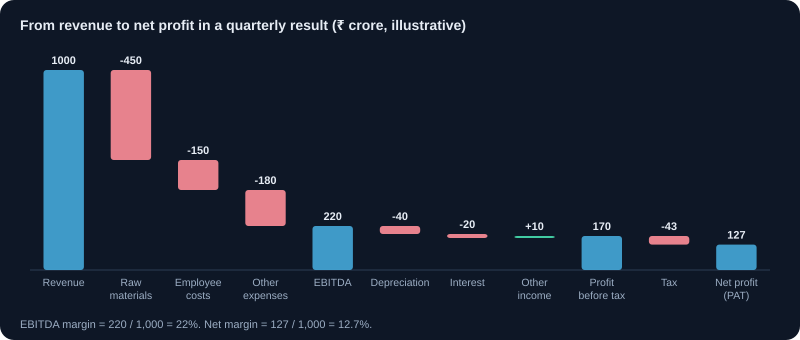
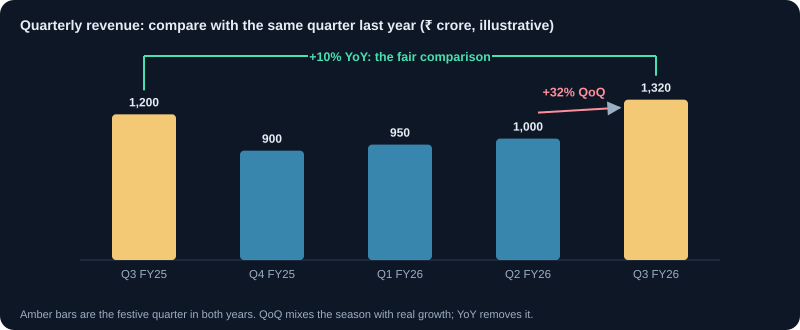

तिमाही नतीजे कैसे पढ़ें
तिमाही नतीजों के आँकड़े कैसे पढ़ें, सही तुलना कैसे करें, और एक-बार की मदों को कैसे पहचानें।
1. तिमाही फ़ाइलिंग में क्या होता है
सूचीबद्ध कंपनियाँ हर तिमाही के नतीजे एक्सचेंज पर दाखिल करती हैं, आमतौर पर तिमाही के अंत के बाद एक तय समय सीमा में (मौजूदा SEBI नियम जाँचें)। फ़ाइलिंग में तिमाही का आय विवरण, पिछली अवधियों से तुलना, और अक्सर सेगमेंट व नकद के विवरण होते हैं। पहला पन्ना सार है; विस्तार तालिकाओं में है।
2. मुख्य पंक्तियाँ, ऊपर से नीचे
- राजस्व (बिक्री): मुख्य कारोबार से कुल आय।
- परिचालन खर्च और EBITDA: ब्याज, टैक्स, मूल्यह्रास और परिशोधन से पहले की कमाई। परिचालन प्रदर्शन का मापक।
- मूल्यह्रास, ब्याज और अन्य आय: गैर-परिचालन मदें।
- कर से पहले मुनाफ़ा (PBT), टैक्स, और कर के बाद मुनाफ़ा (PAT): अंतिम पंक्ति।
- EPS: प्रति शेयर मुनाफ़ा, जो वैल्यूएशन में सबसे ज़्यादा इस्तेमाल होता है।
3. सही अवधियों की तुलना करें
साल-दर-साल (YoY) पिछले साल की उसी तिमाही से तुलना करता है और मौसम का असर हटाता है। तिमाही-दर-तिमाही (QoQ) पिछली तिमाही से तुलना करता है और गति दिखाता है, पर मौसमी कारोबार (जैसे त्योहारी बिक्री वाला खुदरा) में भ्रामक हो सकता है। रुझान के लिए YoY और हाल की दिशा के लिए QoQ इस्तेमाल करें।
4. मार्जिन: विकास की गुणवत्ता
केवल राजस्व बढ़ना काफ़ी नहीं। EBITDA मार्जिन (EBITDA ÷ राजस्व) और शुद्ध मार्जिन (PAT ÷ राजस्व) देखें। बिक्री बढ़े पर मार्जिन घटे तो विकास की कीमत बढ़ रही है। बिक्री की बढ़ोतरी के साथ स्थिर या बढ़ते मार्जिन सबसे अच्छा संकेत है।
उदाहरण: राजस्व YoY 20% बढ़ा, EBITDA मार्जिन 18% से 16%। बिक्री बढ़ी, पर कारोबार ने हर रुपये की बिक्री पर कम कमाया।
5. एक-बार और असाधारण मदें
एक-बार के लाभ, जैसे किसी संपत्ति की बिक्री या टैक्स रिफ़ंड, से मुनाफ़ा अचानक उछल सकता है। असाधारण मदें अलग दिखाई जाती हैं। सामान्य कमाई की शक्ति देखने के लिए उन्हें हटाएँ। जो तिमाही केवल असाधारण आय से मज़बूत दिखती है, वह शीर्षक से कमज़ोर है।
6. अन्य आय मायने रखती है
अन्य आय नकद पर ब्याज या निवेश पर लाभ हो सकती है। जिस कंपनी का मुनाफ़ा मुख्य रूप से अन्य आय पर निर्भर है, उसका मुख्य कारोबार कमज़ोर है। देखें कि PBT का कितना हिस्सा परिचालन से आता है।
7. टिप्पणी और मार्गदर्शन पढ़ें
प्रेस विज्ञप्ति और अर्निंग कॉल आँकड़े समझाते हैं। प्रबंधन बिक्री, मार्जिन या कैपेक्स पर मार्गदर्शन दे सकता है। पिछली तिमाही के वादों की तुलना असल नतीजों से करें। कई तिमाहियों तक दोहराया गया छूटा मार्गदर्शन चेतावनी है।
8. पढ़ने की जाँच-सूची
- राजस्व वृद्धि YoY और QoQ।
- EBITDA और शुद्ध मार्जिन का रुझान।
- असाधारण मदें और अन्य आय का मुनाफ़े में हिस्सा।
- EPS वृद्धि और टैक्स दर में बदलाव।
- अगली सालाना रिपोर्ट में संचालन कैश फ़्लो, यह पुष्टि करने के लिए कि मुनाफ़ा नकद बनता है।
- प्रबंधन के मार्गदर्शन की असल नतीजों से तुलना।
9. समय-सीमा, ऑडिट की स्थिति और नतीजे कहाँ मिलें
SEBI के लिस्टिंग नियमों के तहत कंपनियों को तिमाही ख़त्म होने के 45 दिन के भीतर तिमाही नतीजे, और साल ख़त्म होने के 60 दिन के भीतर पूरे साल के ऑडिटेड नतीजे दाख़िल करने होते हैं। बोर्ड मीटिंग की तारीख़ एक्सचेंज पर पहले से घोषित होती है।
- नतीजे NSE या BSE के कंपनी पेज पर वित्तीय नतीजों और घोषणाओं में, या कंपनी के निवेशक संबंध पेज पर मिलते हैं।
- तिमाही आँकड़ों की आमतौर पर ऑडिटर 'लिमिटेड रिव्यू' करता है, जो पूरे ऑडिट से हल्की जाँच है। साल के अंत के आँकड़े ऑडिटेड होते हैं।
- नतीजों की तालिका के नीचे छपे नोट्स पढ़ें: वे एक-बार की मदें, लेखांकन में बदलाव और लंबित क़ानूनी मामले समझाते हैं।
- नतीजों से पहले 'ट्रेडिंग विंडो बंद' रहने के दौरान अंदरूनी लोग ट्रेड नहीं कर सकते, यह इनसाइडर ट्रेडिंग के ख़िलाफ़ नियम है।
10. स्टैंडअलोन, कंसॉलिडेटेड और सेगमेंट नतीजे
कंपनियाँ स्टैंडअलोन नतीजे (केवल सूचीबद्ध कंपनी) और कंसॉलिडेटेड नतीजे (सहायक कंपनियों समेत) देती हैं। समूह के लिए कंसॉलिडेटेड ही असली तस्वीर है। कई कंपनियाँ सेगमेंट भी बताती हैं, जैसे उत्पाद या क्षेत्र के हिसाब से, जो दिखाते हैं कि बढ़त और मुनाफ़ा असल में कहाँ से आ रहे हैं।
उदाहरण: कंपनी का कंसॉलिडेटेड राजस्व 12% बढ़ता है, पर सेगमेंट तालिका दिखाती है कि मुख्य कारोबार 3% बढ़ा जबकि घाटे वाला नया सेगमेंट 80% बढ़ा। मुख्य बढ़त असली है, पर उसकी गुणवत्ता दिखने से कमज़ोर है।
11. मौसमी असर: QoQ क्यों भ्रम पैदा कर सकता है
कई कारोबारों की मज़बूत और कमज़ोर तिमाहियाँ होती हैं (त्योहारी माँग, मानसून, साल के अंत के ऑर्डर)। किसी तिमाही की तुलना ठीक पिछली तिमाही (QoQ) से करने पर मौसमी उतार-चढ़ाव और असली बदलाव मिल जाते हैं। साल-दर-साल (YoY) तुलना ज़्यादातर मौसमी असर हटा देती है।
| तिमाही | राजस्व (₹ करोड़) | QoQ बदलाव | YoY बदलाव |
|---|---|---|---|
| Q3 FY25 (अक्टू–दिसं) | 1,200 | ||
| Q4 FY25 (जन–मार्च) | 900 | −25% | |
| Q1 FY26 (अप्रैल–जून) | 950 | +6% | |
| Q2 FY26 (जुलाई–सितं) | 1,000 | +5% | |
| Q3 FY26 (अक्टू–दिसं) | 1,320 | +32% | +10% |
'+32% QoQ' की सुर्ख़ी शानदार लगती है, पर त्योहारी तिमाही हमेशा सबसे मज़बूत होती है। सही तुलना पिछले साल की उसी तिमाही से है: +10%।
12. एक हल किया नतीजा: बताया गया बनाम असली मुनाफ़ा
उदाहरण लिमिटेड, Q2 FY26 बनाम Q2 FY25, ₹ करोड़।
| मद | Q2 FY26 | Q2 FY25 | बदलाव |
|---|---|---|---|
| राजस्व | 1,000 | 900 | +11% |
| EBITDA | 180 | 171 | +5% |
| EBITDA मार्जिन | 18.0% | 19.0% | −1.0 अंक |
| अन्य आय | 40 | 10 | +300% |
| असाधारण लाभ (ज़मीन की बिक्री) | 60 | 0 | |
| बताया गया शुद्ध लाभ | 190 | 110 | +73% |
| एक-बार के लाभ के बिना शुद्ध लाभ (टैक्स के बाद) | 145 | 110 | +32% |
सुर्ख़ी कहती है मुनाफ़ा 73% उछला। ज़मीन की एक-बार की बिक्री हटाएँ तो मुनाफ़ा 32% बढ़ा; उसका ज़्यादातर हिस्सा अन्य आय (ट्रेज़री लाभ) से आया, कारोबार से नहीं। परिचालन लाभ (EBITDA) केवल 5% बढ़ा और मार्जिन घटा। सुर्ख़ी मज़बूत दिखने के बावजूद मुख्य कारोबार धीमा पड़ा।
13. नतीजों का दिन: उम्मीदें और भाव की प्रतिक्रिया
- भाव नतीजों पर नहीं, उम्मीदों के मुक़ाबले नतीजों पर चलते हैं। विश्लेषकों के अनुमान से कम रहे अच्छे आँकड़े भी शेयर गिरा सकते हैं।
- प्रबंधन का अनुमान (गाइडेंस) और अर्निंग्स कॉल अक्सर पिछली तिमाही के आँकड़ों से ज़्यादा भाव हिलाते हैं।
- नतीजों के बाद के पहले मिनट अस्थिर होते हैं, चौड़े स्प्रेड और गैप के साथ। नए निवेशकों को घोषणा के समय ट्रेड करने से बचना चाहिए।
- आँकड़ों के कारण समझने के लिए इन्वेस्टर प्रेज़ेंटेशन पढ़ें और अर्निंग्स कॉल सुनें (या उसका ट्रांसक्रिप्ट पढ़ें)।
- नतीजों से पहले ऑप्शन प्रीमियम अक्सर ऊँचे होते हैं और बाद में तेज़ी से गिरते हैं, भले शेयर हिले।
चार्ट और चित्र


कार्य उदाहरण
नतीजे से EPS
तिमाही का शुद्ध लाभ ₹145 करोड़ और कंपनी के 25 करोड़ शेयर, तो तिमाही EPS ₹5.80। पिछली चार तिमाहियों का EPS जोड़ने पर (जैसे ₹5.20 + ₹5.50 + ₹5.40 + ₹5.80 = ₹21.90) पिछले बारह महीनों का EPS मिलता है, जिससे P/E निकाला जाता है।
रुपयों में मार्जिन बदलाव
₹1,000 करोड़ राजस्व पर 18% EBITDA मार्जिन से ₹180 करोड़ बनते हैं। पिछले साल के 19% पर यह ₹190 करोड़ होता। एक अंक की मार्जिन गिरावट ने एक ही तिमाही में ₹10 करोड़ परिचालन लाभ घटा दिया।
वास्तविक परिस्थितियाँ
मुनाफ़ा बढ़ा, शेयर गिरा
कंपनी 20% मुनाफ़ा बढ़त बताती है, पिछले साल से काफ़ी बेहतर, पर शेयर 6% गिरता है। विश्लेषक 25% की उम्मीद कर रहे थे, और प्रबंधन ने कॉल पर पूरे साल के राजस्व का अनुमान घटा दिया। बाज़ार ने पिछली तिमाही नहीं, भविष्य की क़ीमत लगाई।
एक-बार की मद ने सुस्ती छिपाई
टैक्स रिफ़ंड की वजह से शुद्ध लाभ दोगुना होता है। राजस्व 4% बढ़ा और मार्जिन घटा। केवल सुर्ख़ी पढ़ने वालों ने ख़रीदा; नोट्स पढ़ने वालों ने रिफ़ंड और कमज़ोर मुख्य आँकड़े देखे।
उपयोग के मामले
- एक सरल शीट में पिछली आठ तिमाहियों का राजस्व, EBITDA मार्जिन और मुनाफ़ा दर्ज करना।
- बताए गए मुनाफ़े की तुलना असाधारण मदों और असामान्य अन्य आय के बिना वाले मुनाफ़े से करना।
- सेगमेंट नतीजे देखकर समझना कि कौन-सा कारोबार बढ़त ला रहा है।
- प्रबंधन के अनुमान की तुलना बाद के नतीजों से करके उसकी विश्वसनीयता परखना।
मुख्य बातें
- मौसमी असर हटाने के लिए तिमाही की तुलना पिछले साल की उसी तिमाही से करें।
- राजस्व और EBITDA मार्जिन से शुरू करें; आख़िरी पंक्ति एक-बार की मदों और अन्य आय से बदल सकती है।
- समूहों के लिए कंसॉलिडेटेड नतीजे पढ़ें, और बढ़त का स्रोत जानने के लिए सेगमेंट तालिका।
- नतीजे अकेले नहीं, उम्मीदों और अनुमान के मुक़ाबले भाव हिलाते हैं।
- तिमाही आँकड़े लिमिटेड रिव्यू वाले होते हैं, ऑडिटेड नहीं; नोट्स असामान्य मदें समझाते हैं।
मुख्य शब्द, समझाए गए
- EBITDA
- ब्याज, टैक्स, मूल्यह्रास और परिशोधन से पहले की कमाई। परिचालन प्रदर्शन का मापक।
- शुद्ध मुनाफ़ा
- सभी खर्च, ब्याज और टैक्स चुकाने के बाद राजस्व में जो बचता है।
- राजस्व (बिक्री)
- कोई भी खर्च घटाने से पहले सामान या सेवाएँ बेचकर कुल आय।
- EPS (प्रति शेयर आय)
- शुद्ध मुनाफ़े को बकाया शेयरों की संख्या से भाग देने पर प्राप्त राशि।
- असाधारण मदें (Exceptional items)
- नतीजों में अलग दिखाए गए बड़े, असामान्य या एक-बार के लाभ या नुकसान, जैसे संपत्ति की बिक्री या राइट-डाउन।
- ऑपरेटिंग मार्जिन
- ऑपरेटिंग मुनाफ़ा ÷ राजस्व। बिक्री के हर रुपये में से चालू खर्च के बाद कितना बचता है।
सीखने वालों के सामान्य प्रश्न
कंपनियाँ तिमाही नतीजे कब घोषित करती हैं?
तिमाही ख़त्म होने के 45 दिन के भीतर (SEBI नियमों के तहत पूरे साल के ऑडिटेड नतीजों के लिए 60 दिन)। ज़्यादातर कंपनियाँ बोर्ड मीटिंग की तारीख़ एक हफ़्ता या ज़्यादा पहले बताती हैं; एक्सचेंज के घोषणा पेज पर यह मिलती है।
क्या नतीजों से ठीक पहले ख़रीदना चाहिए?
यह एक अनजाने नतीजे और बाज़ार की प्रतिक्रिया पर दाँव है। कई अनुभवी निवेशक नतीजों और अर्निंग्स कॉल का इंतज़ार करते हैं, फिर जानकारी हाथ में लेकर फ़ैसला करते हैं।
EBITDA क्या है और विश्लेषक इसे क्यों इस्तेमाल करते हैं?
ब्याज, टैक्स, मूल्यह्रास और एमॉर्टाइज़ेशन से पहले की कमाई: फ़ाइनेंसिंग और संपत्ति के लेखांकन शुल्क से पहले का परिचालन लाभ। यह परिचालन प्रदर्शन की तुलना में मदद करता है, पर कैपेक्स और क़र्ज़ की असली लागत को नज़रअंदाज़ करता है, इसलिए इसे अकेले कभी इस्तेमाल न करें।
स्टैंडअलोन और कंसॉलिडेटेड आँकड़े इतने अलग क्यों हैं?
कंसॉलिडेटेड नतीजों में सहायक कंपनियाँ, संयुक्त उद्यम और एसोसिएट शामिल होते हैं। अगर सहायक कंपनियाँ बड़ी या घाटे में हैं, तो दोनों में बहुत अंतर हो सकता है। सूचीबद्ध कंपनी के निवेशकों के लिए आमतौर पर कंसॉलिडेटेड आँकड़े ज़्यादा मायने रखते हैं।
केवल शैक्षिक सामग्री, निवेश सलाह नहीं। बाज़ार में जोखिम होता है, जिसमें पूँजी खोने का जोखिम भी शामिल है। उदाहरण सरल किए गए हैं और इनमें शुल्क, टैक्स या स्लिपेज शामिल नहीं हो सकते।